Sur le rebranding de Biotec, je suis intervenu sur les premières étapes : conceptualisation et recherche. Un travail de fond pour poser la vision et la stratégie du projet, et préparer la refonte de marque et de site qui ont suivi.
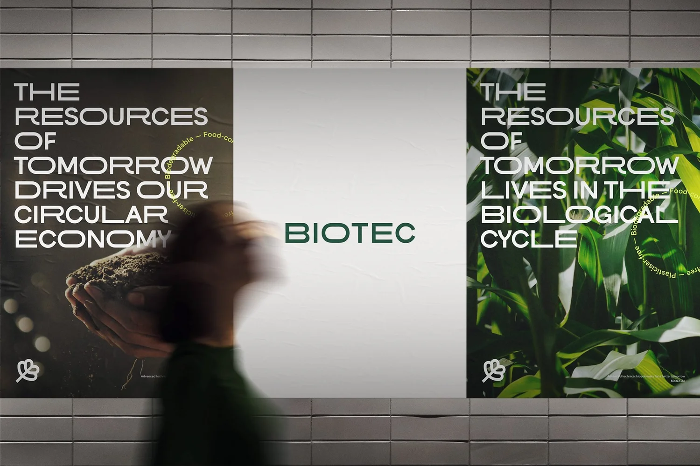
Biotec passe de la chenille au papillon : nouvel emblème, palette inspirée de la nature, typographie sur mesure. La marque s'offre son plus beau costume, prête à séduire.
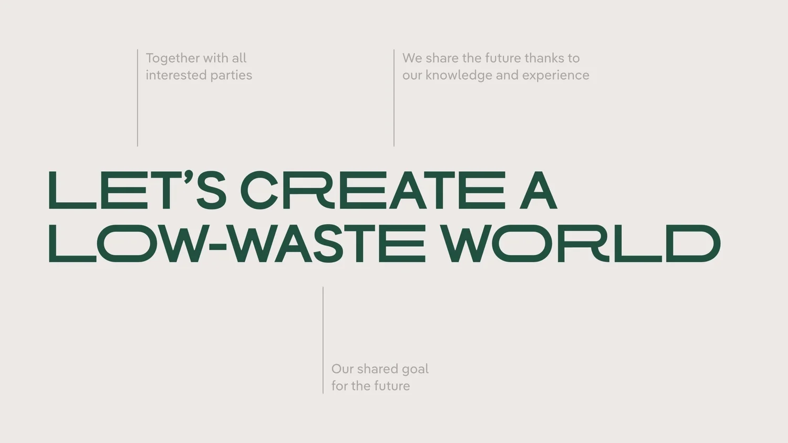
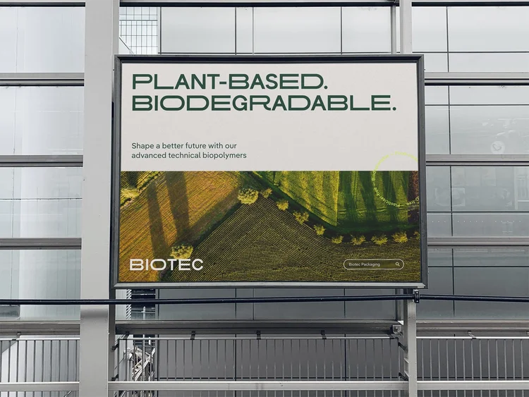
La refonte du site relève presque de la magie : une navigation intuitive, fluide comme une glisse dans l'espace digital. Chaque clic promet une découverte et transforme la visite en expérience.
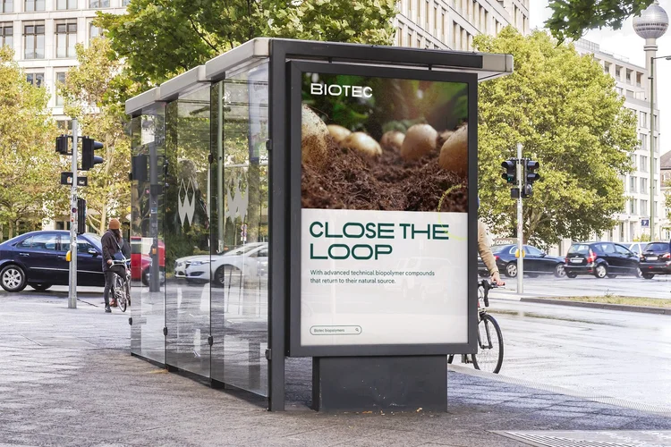
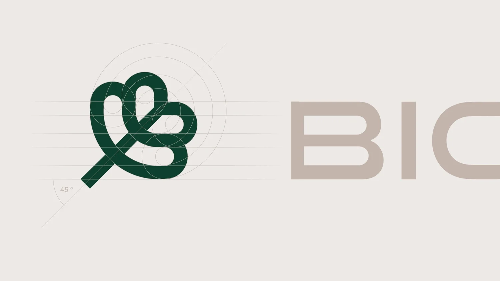
Résultat : une marque fière et affirmée, qui respire la confiance et l'éco-responsabilité. Expérience améliorée, identité fraîche comme la rosée du matin. Biotec s'est épanouie.
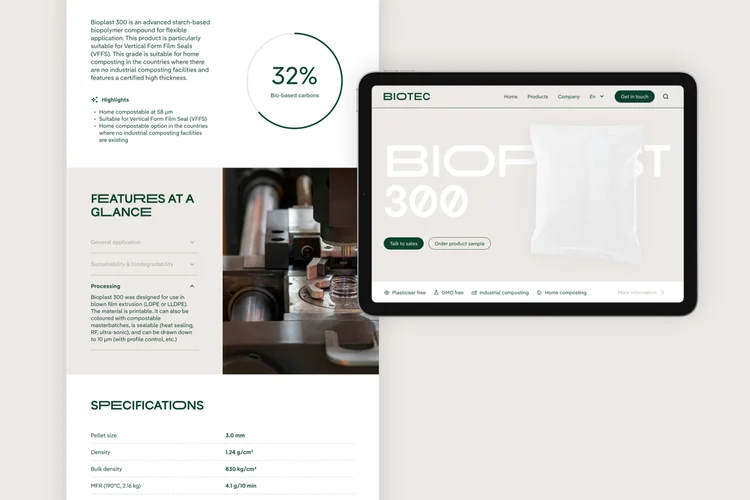
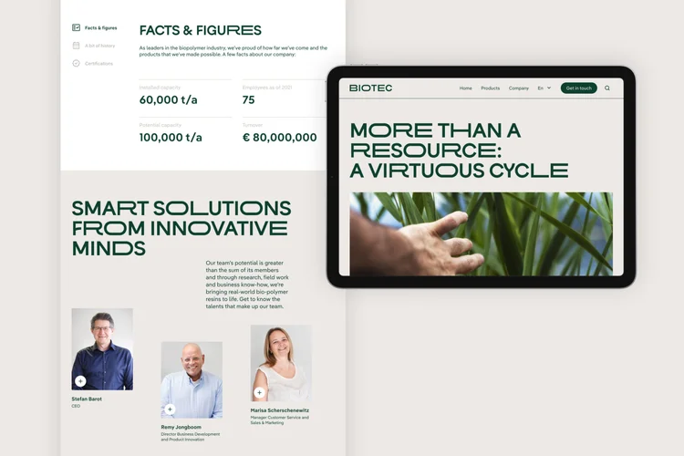
Ma contribution a porté sur la phase initiale de conceptualisation et de recherche, posant les fondations et la direction du projet. Il a ensuite été développé et finalisé par l'excellente équipe de Monospace Design.
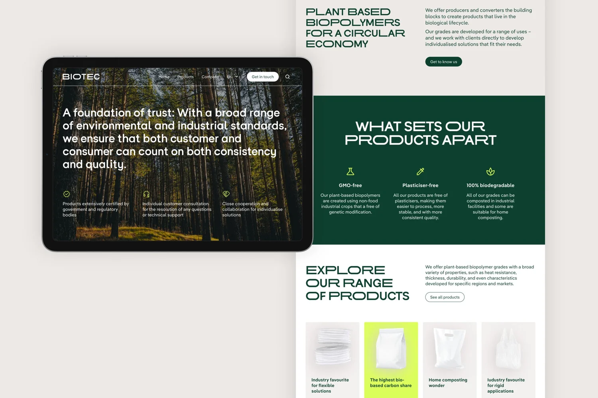
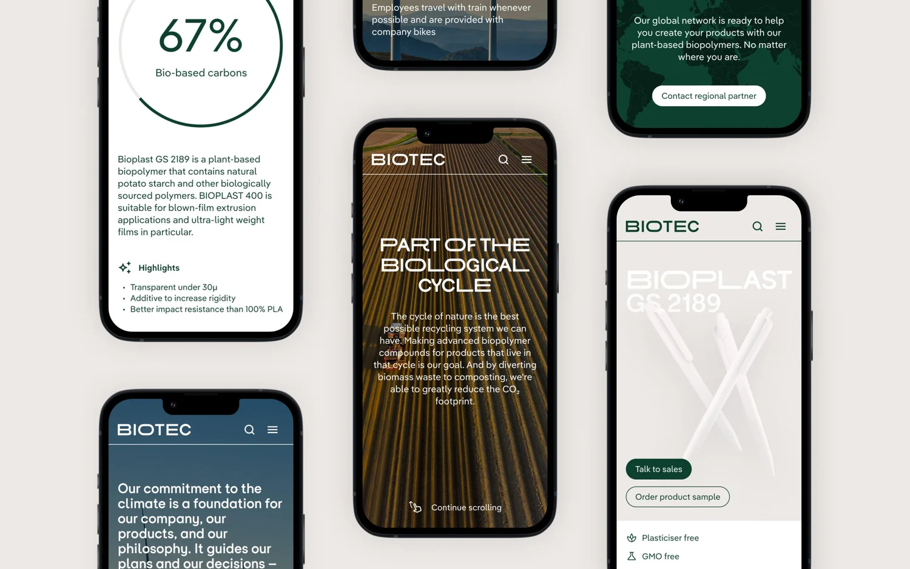
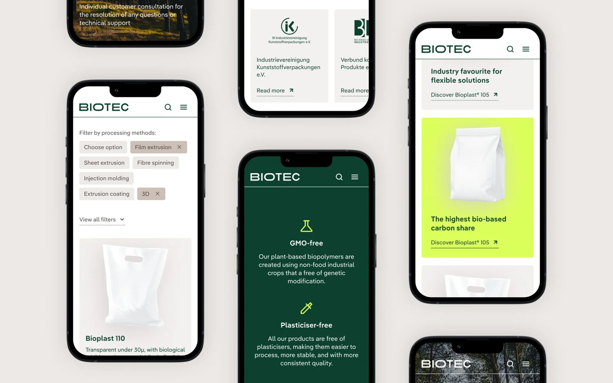
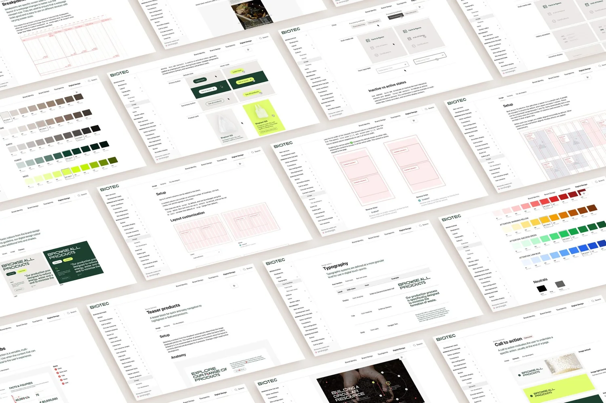
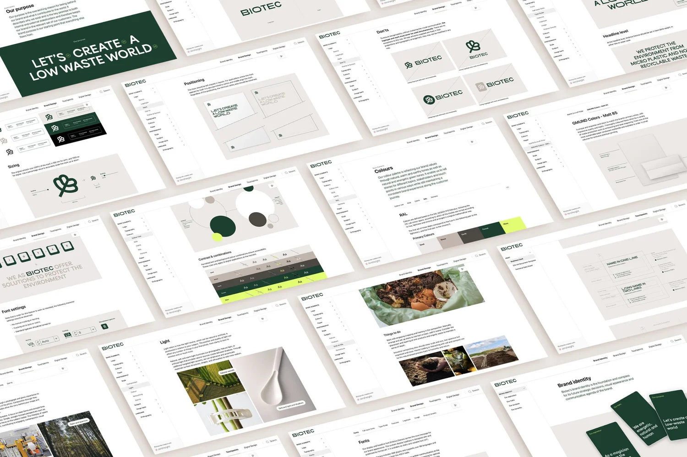
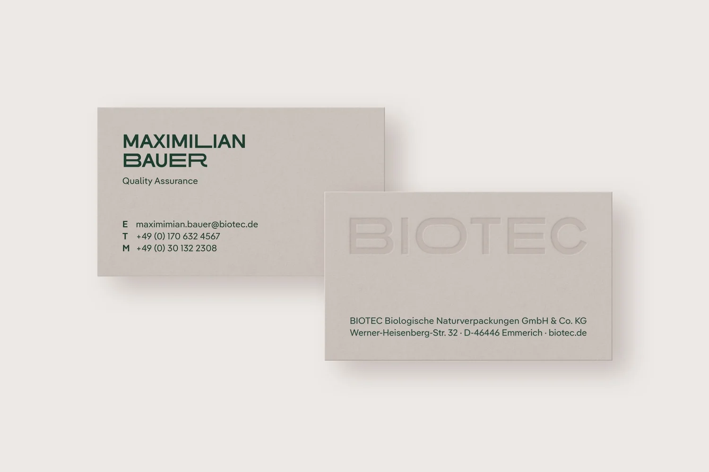
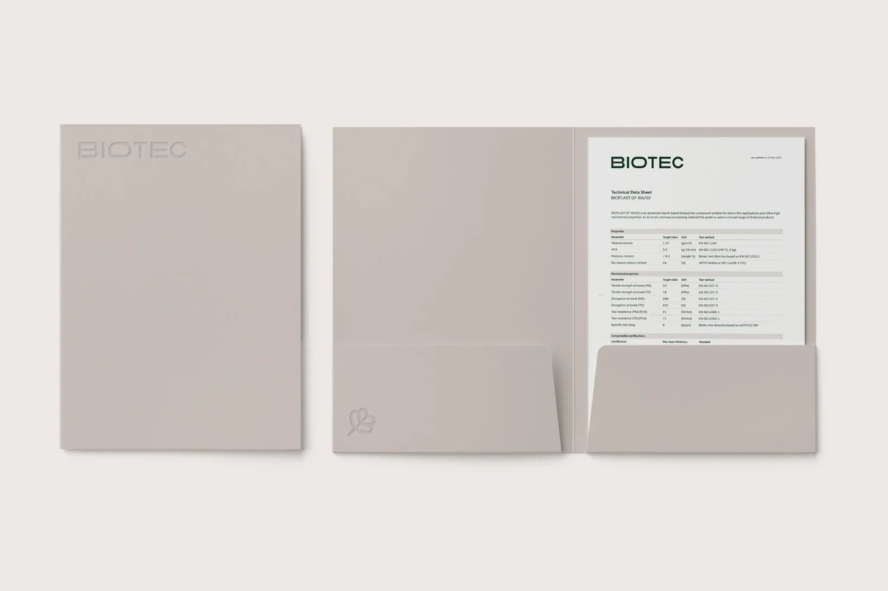
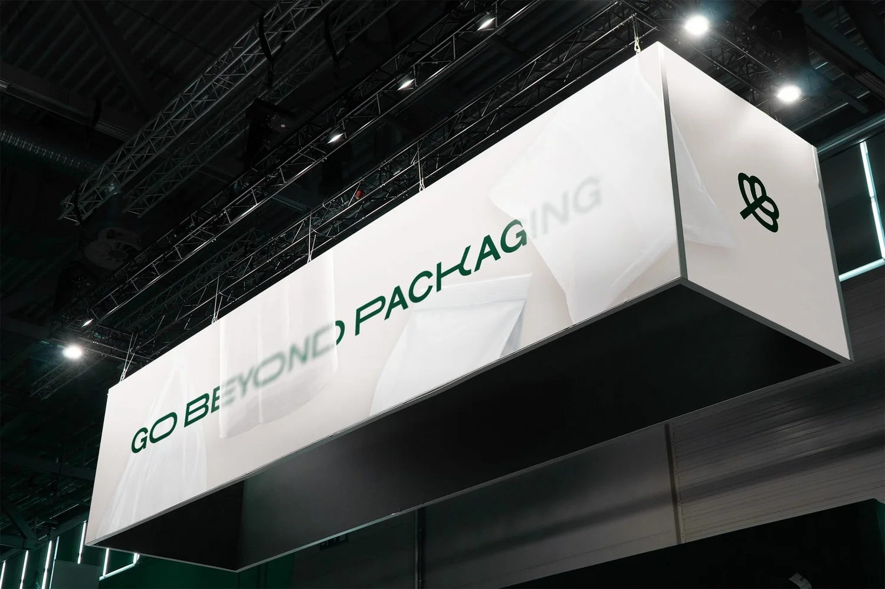